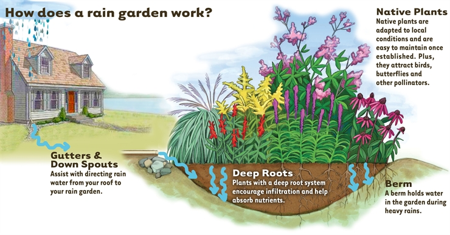
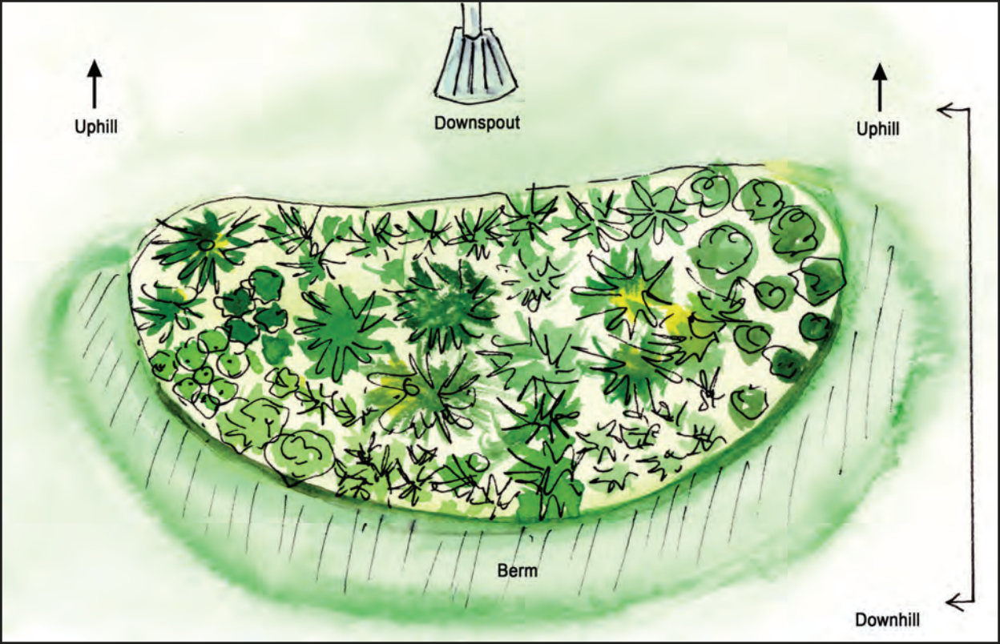
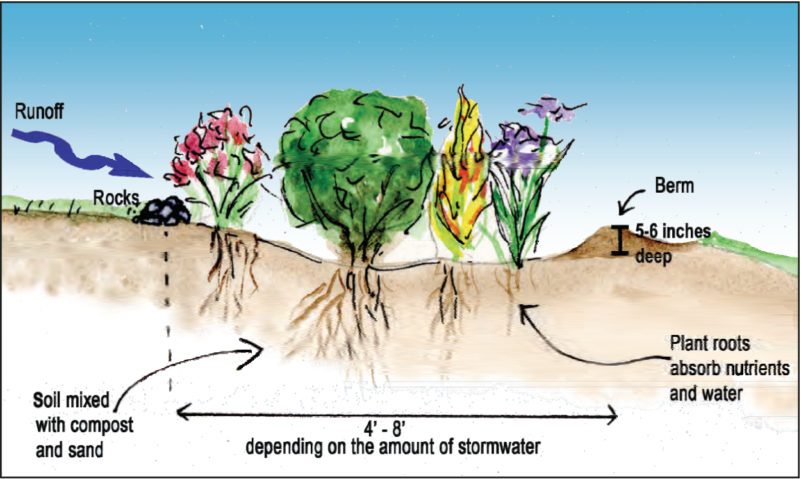
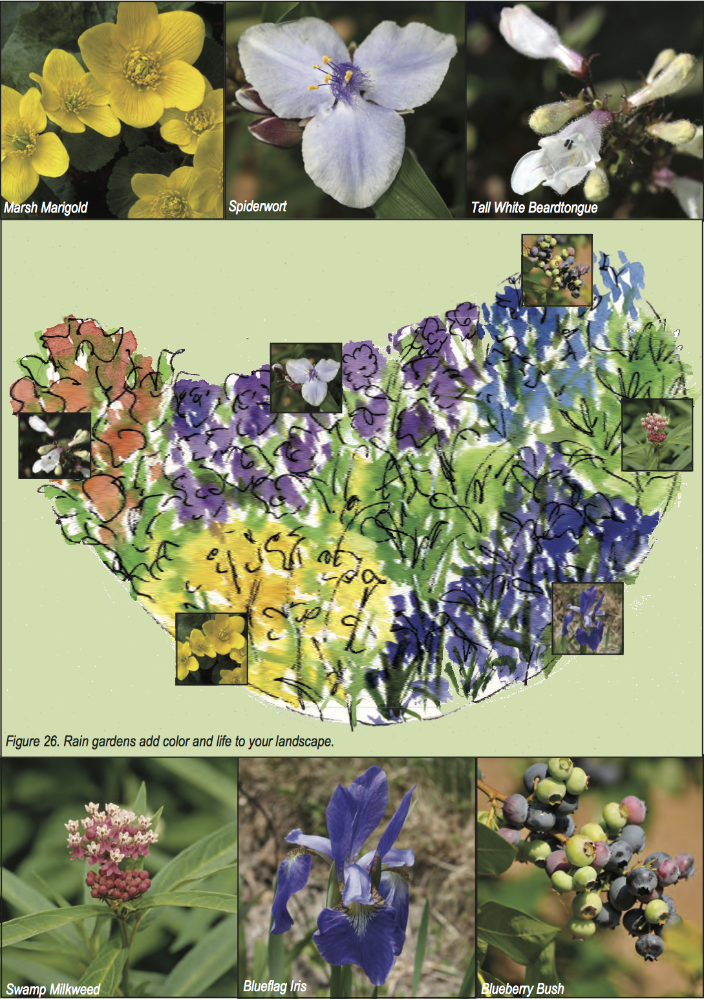

what is a rain garden?

Image Credit: laurens garden service
A rain garden is a planted shallow depression that uses water-tolerant native plants and landscaping to soak up stormwater flowing from downspouts or hard (impervious) surfaces, such as your driveway, patio, or sidewalk. Rain gardens allow water to slowly seep into the ground, reducing the amount of water that flows directly into the nearest storm drain, creek, or river. Rain gardens typically consist of an absorbent soil mix, a mulch layer, and plants such as shrubs, grasses, and flowering plants. Rain gardens are a beautiful, low-tech, inexpensive way for homeowners, communities, and businesses to help ease stormwater problems and reduce pollution in local streams and rivers.
location
To determine where to build your rain garden, you will need a good understanding of the layout of your yard. Consider the tips below to help you choose the best rain garden location.
- When it rains, watch the flow of water on and around your property. Using arrows, draw the movement of water from your house or driveway (both going away from or toward your house). You’ll begin to see the direction runoff flows towards storm drains or waterways. Locate your rain garden so that it intercepts the runoff before flowing into these outlets.
- Low-lying wet areas where water naturally ponds after a heavy storm may be good areas for your rain garden too.
- The best location for the rain garden is in partial to full sun.
- Locate rain gardens downslope from a downspout, driveway or other impervious surfaces to capture and treat more runoff.
- Rain gardens should be at least 25 feet away from a septic drain field or well head and 10 feet away from a dwelling foundation to prevent water from seeping into basements or crawl spaces. Check with your local approving agency for additional guidance.
- Level or gently sloping sites require the least amount of digging.
- Think about the views of your rain garden within the existing landscape from different perspectives, including inside the house.

Image Credit: Maryland Coastal Bays Program
A quick sketch can help you visualize the garden’s location. Its longest side should be oriented to intercept runoff flowing downhill and from any direct sources of runoff like a downspout.
construction

Image Credit: Maryland Coastal Bays Program
A sketch of your rain garden can help guide the construction process. In the example above, the rain garden is about 4-8 feet wide and has a surface ponding depth of 5-6 inches. Rocks located at the entrance point helps to dissipate runoff and the berm helps to hold water in the rain garden.
Plant Selection

Image Credit: Maryland Coastal Bays Program
- Sun, partial sun, and shade Select native plants adapted to the sunlight your rain garden will receive.
- Height, color, and texture The physical properties of your plants will help add variety and interest to your rain garden. If your rain garden lacks flowering blooms, then take advantage of different leaf shades, shapes, and colors. For example, combining a variety of textures, staggering heights, and plants bearing variegation increases visual interest if clustered properly.
- Cluster Like real estate, landscaping has three rules: cluster, cluster, and cluster. Buy at least three individual plants of each species, but seven is typically the minimum number for a cluster.
- Blooms Design your rain garden to be “alive” spring through fall by selecting plants that bloom throughout the seasons. For example, beardtongue blooms from April to June and cardinal flower, a hummingbird favorite, blooms from July to September. White turtlehead (figure 29) blooms from August to October and is the only plant that the Maryland state insect, the Baltimore Checkerspot Butterfly, will lay its eggs on. By designing your garden to bloom year round with native plants, local insects and wildlife will benefit too.
- Roots Buy one or two-year old plants with well-established root systems that are beginning to circle or mat the pot, yet are young enough to adapt well to new growing conditions.
Incorporating clusters of ferns, rushes, and grasses with your flowering plants creates good root competition. This is normal and causes a healthier root pattern to develop. Blending a mix of clustered plant species reduces the chance of the garden being overrun by one species. If you would like to plant shrubs and trees, make sure they are well adapted to at least part-time wet conditions.
For more construction information, please go to check this link.
You can also check Rebates here.